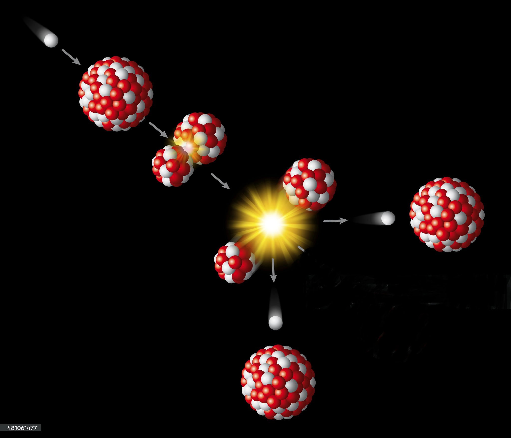

Sa biographie:
Nom, prénom : Meitner Lise
Date/lieu de naissance : Elle est née le 7 novembre 1878 en Autriche.
Date/lieu de mort : Elle est décédée le 27 octobre 1968 au Royaume-Uni à l’âge de 90 ans.
Parents : C'est parents s'appelle Hedwig Skovran et Philipp Meitner.
Enfants : Huit enfants, dont quatre filles et trois garçons.
Origine/nationalité : Elle est d'origine juive et de nationalité autrichienne, puis plus tard de nationalité suédoise.
Célèbre pour : Lise Meitner est une physicienne autrichienne devenue suédoise, connue pour ses travaux en physique nucléaire et pour avoir joué un rôle majeur dans la découverte de la fission nucléaire. Oubliée du prix Nobel, elle fait partie de ces nombreuses femmes scientifiques dont les travaux n’ont pas été reconnus à leur juste valeur.
Qualités/personnalités : Elle est de nature simple et modeste, Meitner possède une ténacité hors norme et un redoutable esprit de compétition qui lui ont permis de se faire un nom dans le monde de la physique nucléaire. Indépendante, convaincante, elle milite pour l’éducation et une plus grande implication des femmes dans les sciences.
Etudes/options : Elle a reçut une éducation intellectuelle et des encouragements, poursuit de hautes études et une scolarité avancée. Après deux ans de préparation dans un petit groupe de femmes, en 1901, elle est reçu à l’université de Vienne. Elle y apprend la physique, la chimie, les mathématiques et la botanique avant de se spécialiser en physique, la deuxième année. En décembre 1905, Lise obtient avec la plus haute mention son doctorat.
Parcours : Après ses études, Lise Meitner se consacre à ses activités de recherche et s’initie à l’étude de la radioactivité et de l’absorption dans les métaux des rayonnements alpha et bêta. Ensuite, en 1907 elle part à Berlin pour suivre les cours de Max Planck, plus tard, elle accepte une proposition de collaboration avec le chimiste Otto Hahn. C’est le début d’une association efficace et d’une amitié qui durera 30 ans. En 1912, Otto Hahn est embauché à l’Institut Kaiser Wilhelm de chimie, et Lise Meitner est autorisé à le rejoindre, mais c’est qu’en 1913 qu’elle décroche son premier poste. En 1917, elle devient directrice du département de physique de son institut et poursuit sa collaboration avec Otto Hahn. Elle est également nommé professeur de physique à l’université de Berlin en 1926. En 1934, avec Otto et le chimiste Fritz Strassmann, elle s’implique dans le « projet uranium ».
Avec l’arrivée au pouvoir de Adolf Hitler, et la haine contre les juifs, Lise n’est plus protégé, alors elle fuit l’Allemagne en 1938, puis gagne la Suède, et poursuit ses recherches avec les scientifiques allemands, dont Otto Hahn sur la production d’éléments plus lourds que l’uranium. En février 1939, le mécanisme de fission nucléaire est découvert : c’est le point de départ d’une course planétaire qui mènera à la bombe atomique. Ils découvrent les effets du bombardement de l’uranium avec des neutrons. Rapidement, la communauté scientifique réalise que la fission nucléaire peut avoir des usages militaires, le projet Manhattan, qui aboutira à la mise au point de l’arme nucléaire est lancé sans la participation de Lise car elle refuse de créer une bombe. En 1944, Otto Hahn reçois le prix Nobel de chimie, nommé trois fois pour le prix Nobel, Lise Meitner ne le recevra jamais ce qui est perçu comme une injustice. En 1949, elle prend la nationalité suédoise. En 1960, elle part s’installer en Angleterre, où elle meurt quelques années plus tard, le 27 octobre 1968.
• Prix / médailles / honneurs :
⁃ 1917 : nommé à la direction du département de physique du KWI–C
⁃ Février 1939 : formalisation du mécanisme de fission nucléaire, avec Otto Hahn.
⁃ 1947 : le prix d’honneur de la ville de Vienne pour la science.
⁃ 1949: la médaille Max Planck de la société allemande de physique.
⁃ 1966 : le prix Enrico Fermi, avec Otto Hahn et Fritz Strassman.:
Page Lumni vidéo de Lise Meitner.